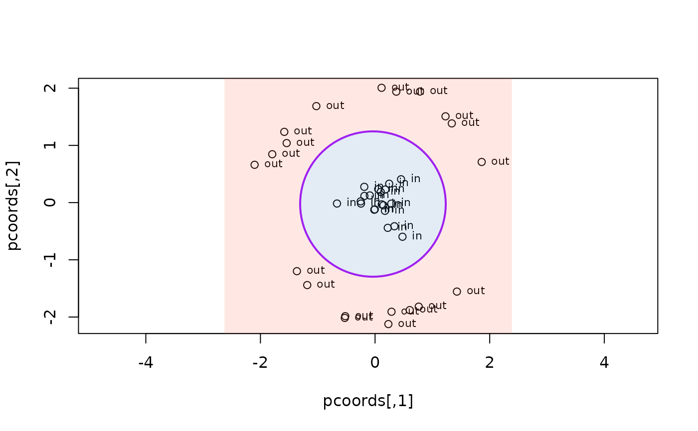

Binary radial partition (one separating circle)
radialCircle.RdFinds the circle minimising misclassification between two groups of 2D
points. The center is found by multi-start Nelder-Mead (starts: data
centroid plus each group's centroid) unless cx and cy are supplied.
For a given center, the optimal radius is found by a linear scan over
all n-1 candidate midpoints without assuming which group is inner.
Usage
radialCircle(
crd,
group,
cx = NULL,
cy = NULL,
fill = FALSE,
output = TRUE,
col = "purple",
cols = c("steelblue", "tomato"),
lwd = 2,
lty = 1,
.method = "Nelder-Mead",
add = TRUE
)Arguments
- crd
Numeric matrix or data frame with exactly 2 columns.
- group
Factor with exactly 2 levels.
- cx, cy
Center of the separating circle; optimised when
NULL(default).- fill
If
TRUE, shade the inner disc and outer region (defaultFALSE).- output
If
TRUE(default), return results list.- col
Circle border colour (default
"purple").- cols
Length-2 fill colours (default
c("steelblue", "tomato")).- lwd
Line width (default
2).- lty
Line type (default
1).- .method
"Nelder-Mead"(default) or"SANN".- add
If
TRUE(default), add to existing plot; ifFALSE, callplot()first.
Value
If output = TRUE, a list with center, radius, misclass
(integer), misclass_points (data frame with columns x, y, label
for each misclassified point), sector (1 inside / 2 outside per
point), and majority (character[2]).
Examples
set.seed(1)
inner <- cbind(rnorm(20, 0, 0.3), rnorm(20, 0, 0.3))
th <- runif(20, 0, 2 * pi)
outer <- cbind(2 * cos(th), 2 * sin(th)) + matrix(rnorm(40, 0, 0.1), 20)
crd <- rbind(inner, outer)
grp <- factor(c(rep("in", 20), rep("out", 20)))
radialCircle(crd, grp, fill = TRUE, add = FALSE)

#> $center
#> [1] -0.03723659 -0.02506890
#>
#> $radius
#> [1] 1.270447
#>
#> $misclass
#> [1] 0
#>
#> $misclass_points
#> [1] x y label
#> <0 rows> (or 0-length row.names)
#>
#> $sector
#> [1] 1 1 1 1 1 1 1 1 1 1 1 1 1 1 1 1 1 1 1 1 2 2 2 2 2 2 2 2 2 2 2 2 2 2 2 2 2 2
#> [39] 2 2
#>
#> $majority
#> [1] "in" "out"
#>